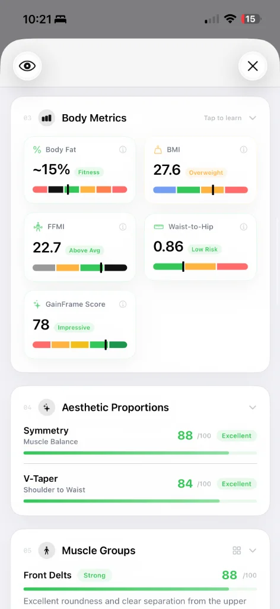
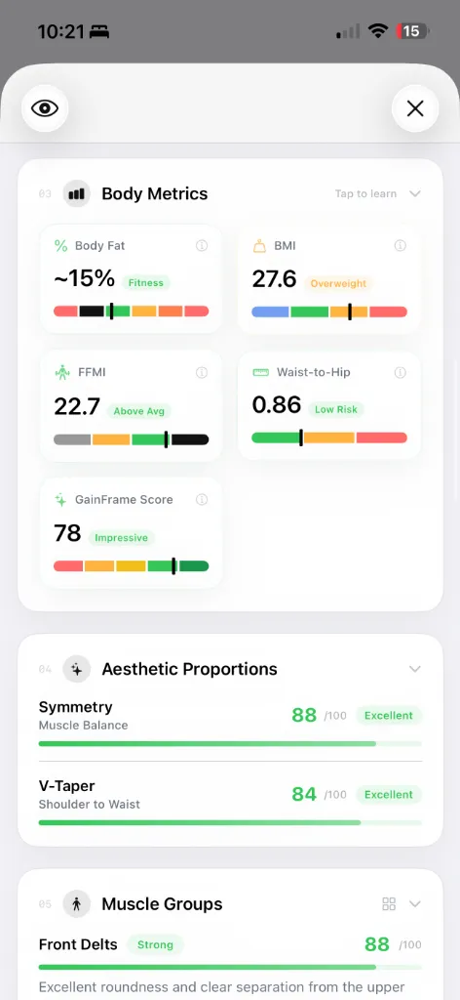
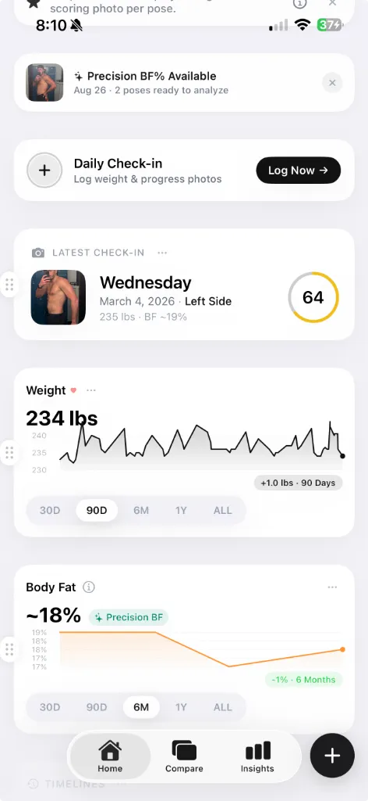

Visualizing Body Fat: A Comprehensive Aesthetic Guide for Men and Women
Text descriptions of body fat percentages are practically useless without visual benchmarks. Here is the definitive guide to estimating your body fat percentage.

The beta is live — try it free.
Join the Beta on TestFlightSearch intent for body fat estimation is relentless and highly visual. We constantly search for visual benchmarks to compare against our current physiques because text-based descriptions of "15% body fat" are practically useless without corresponding imagery.
We need an objective, highly shareable reference point for personal goal setting. And to do that, we must first establish the biological baseline: the difference between essential fat and storage fat.
The biological baseline: men vs. women
Before looking at visual benchmarks, it is critical to clarify a physiological reality: women naturally and necessarily carry 10% to 13% more essential fat than men.
This biological requirement supports reproductive and hormonal health. Men can survive with about 2% to 5% essential fat, while women require 10% to 13%. This means that a female at 20% body fat looks vastly different — and is significantly leaner relative to her gender — than a male at 20% body fat.
Here is how the distinct classifications break down across genders:
| Classification | Men (Body Fat %) | Women (Body Fat %) | Aesthetic Characteristics |
|---|---|---|---|
| Essential / Competition Lean | 2% – 5% | 10% – 13% | Extreme vascularity, deep muscular striations, highly unsustainable for long-term health. |
| Athletic / High Fitness | 6% – 13% | 14% – 20% | Clear muscle separation, visible abdominal definition, prominent vascularity on extremities. |
| Fitness / Healthy Lean | 14% – 17% | 21% – 24% | Softer overall definition, abdominal separation visible primarily under optimal lighting conditions. |
| Average / Acceptable | 18% – 24% | 25% – 31% | Minimal visible muscle definition, adipose tissue begins concentrating predominantly in the abdominal/hip regions. |
| Obese / High Risk | 25%+ | 32%+ | Significant accumulation of subcutaneous and visceral fat, complete absence of muscle definition. |
(For additional reference calculators using tape measurements, tools like the US Navy Body Fat Calculator can provide a secondary data point alongside visual estimation.)
Visualizing male body fat percentages
Because men do not carry the same essential fat requirements for reproductive health, male fat distributes differently — primarily targeting the stomach (visceral and subcutaneous abdominal fat) before spreading to the extremities. The image below illustrates what each level actually looks like on real physiques.

Visual comparison of male body fat percentages from 8% to 40%. Source: Ultimate Performance.
What 8% body fat looks like
This level of body fat is most common among competitive bodybuilders during peak week. You would see not only every muscle in your body, but individual muscle strands and deep striations. Vascularity is extreme — veins are visible across the abdomen, chest, and legs.
Sub-8% body fat is getting into the essential fat range. Maintaining this level long-term is unhealthy: calorie intake must be extremely low, leading to potential deficiencies in fat-soluble vitamins (A, D, E, K), compromised immunity, dry skin, and significantly reduced testosterone and sex drive.
What 10% body fat looks like
This is where most men should aim if general health and aesthetics are the goal. You should see a visible six-pack and clear muscular definition across the shoulders, chest, and arms. The rectus abdominis (the six-pack) and serratus anterior (the muscles wrapping the ribs) are clearly defined.
It is lean enough to look visually athletic while being relatively sustainable with consistent training and a calorie-controlled diet. For most men, this is considered a healthy and maintainable target.
What 15% body fat looks like
This is the leaner end of the "average" male. You likely wouldn't see much visible ab definition, and the sharp separation between muscle groups begins to blur. However, this is not unhealthy — most men who weight train regularly will look fit in clothes at this level.
Health markers are typically good here, with low visceral fat levels provided your diet is reasonable. Vascularity is usually restricted to a few veins on the forearms.
What 20% body fat looks like
This is the higher end of the average scale. Softness covers the entire physique, and fat begins to visibly accumulate on the stomach — though it doesn't show severe rounding or overhang. Muscle separation is essentially nonexistent, with no striations or vascularity.
This level of body fat is approaching the threshold where inflammation and chronic disease risk begins to increase. Regular exercise and dietary adjustments will pay dividends here.
What 25% body fat looks like
At 25%, the waistline increases noticeably. Love handles, a protruding belly, and visible chest fat ("man boobs") are common. Aesthetics aside, this is where health risks become a genuine concern: elevated inflammation, insulin resistance, and increased likelihood of type 2 diabetes.
What 30% body fat looks like
Fat hangs over clothing and will wobble noticeably. The midsection rounds out significantly. Due to testosterone's influence, men are far more likely to store fat around the organs (visceral fat). If your stomach is hard or looks "pregnant," it's a sign of high visceral fat pushing against the stomach wall internally.
Chronic disease risk is serious at this level and should be addressed through exercise and a calorie-controlled diet.
What 35–40% body fat looks like
At 35% and above, body composition makes you a prime candidate for diabetes, heart disease, and a host of issues caused by chronic inflammation, poor gut health, and joint stress from carrying excess weight daily. Fat distributes heavily across the midsection, chest, face, and neck.
This is the stage where immediate lifestyle changes — consistent exercise and a structured diet — are critical for long-term health.
For an excellent in-depth comparison with additional photographic examples, see Ultimate Performance's male body fat visual guide.
Visualizing female body fat percentages
Female fat distribution is driven heavily by estrogen, which prioritizes fat storage in the hips, thighs, and buttocks rather than the stomach. Women will typically retain a softer, curvier appearance at much lower comparative body fat percentages than men.
10% – 14%: The Competition Lean
This is the female equivalent of 2-5% for men. It is the essential fat range and is largely unhealthy to maintain long-term, often leading to amenorrhea (loss of menstrual cycle). Muscles are deeply separated, and vascularity is noticeable across the arms, legs, and even the abdomen.
15% – 19%: The Highly Athletic
Many fitness and bikini competitors sit in this range during off-season or maintenance. There is clear definition in the abdominals, shoulders, and back. However, because body fat is low, the hips, thighs, and glutes often have less pronounced curves. Vascularity is typically visible in the arms.
20% – 24%: The Fit & Curvy Range
This is the range for most highly fit female athletes. The sharp separation between muscles is less apparent, leaving a toned but softer appearance. The deltoids (shoulders) soften, and there is still some definition in the abdominals. Fat begins to distribute naturally across the hips and thighs, creating classic curves.
25% – 29%: The Average Female Range
This is the healthy, acceptable range where most women fall. The physique is not overly slim nor overweight. Curves are distinct and pronounced as body fat settles naturally around the hips, thighs, and buttocks. Muscle definition is minimal to non-existent without flexing.
30%+: The Overweight & Obese Range
As weight increases above 30%, fat continues to funnel heavily into the lower body — the hips, thighs, and glutes become significantly more rounded. As the percentage climbs toward 35% and 40%, fat begins to accumulate more noticeably in the stomach, face, and neck, and the waistline typically expands beyond 32 inches.
How to measure your body fat percentage
Every measurement method has a margin of error. The key is finding one you can use consistently so you can track relative change over time, even if the absolute number isn't perfect.
| Method | Accuracy | Accessibility | Drawbacks |
|---|---|---|---|
| DEXA Scan | ±1–2% | Low — requires clinic visit, $75–150 per scan | Expensive to repeat frequently; results vary between machines. |
| Skinfold Calipers | ±3–4% | Medium — requires trained technician | High skill requirement; readings skewed by subcutaneous fluid. |
| Bioelectrical Impedance (Smart Scale) | ±4–8% | High — consumer devices widely available | Heavily influenced by hydration; wildly inconsistent day to day. |
| Progress Photos + AI Analysis | ±2–3% (trending) | High — only requires a phone camera | Absolute accuracy depends on lighting consistency; excels at tracking change over time. |
The most reliable approach mirrors what professional trainers do at firms like Ultimate Performance: use multiple benchmarks together — scale weight, visual progress photos, and circumference measurements — rather than drawing conclusions from any single method in isolation.
The problem with human perception
While visual guides are highly useful, the integration pathway for personal tracking runs into a massive physiological roadblock: human optical perception is notoriously subjective and heavily prone to body dysmorphia.
When you look in the mirror, your brain focuses on your insecurities. If you are terrified of losing your abs, you will perceive yourself as softer than you are. If you are terrified of looking skinny, you will perceive yourself as smaller than you are.
You cannot objectively compare yourself to a visual chart when your self-perception changes based on the lighting, your mood, or what you ate for dinner.
This is the fundamental problem that systems like GainFrame were built to solve. The app removes cognitive bias and guesswork by utilizing advanced computer vision to objectively place your progress photo on this exact continuum.

Instead of staring at a chart online and guessing whether you're at 15% or 19%, the AI analyzes the distinct topological features of your physique — shadow depth, muscle separation, and contour lines — and provides a definitive, unbiased percentage based on hard data rather than emotional self-assessment.
Using absolute vs. relative data
Estimating your absolute body fat percentage (e.g., "I am exactly 16.2%") is difficult, even for AI. But tracking the relative change (e.g., "I moved from 18% to 16% over 8 weeks") is incredibly accurate when using consistent photos.

If you're tracking your physique:
- Set an aesthetic goal using the charts above (e.g., "I want to reach the 14-17% Athletic range").
- Take consistent progress photos under the exact same lighting conditions every week.
- Use AI analysis to strip away your personal bias and map your trajectory objectively.
Visual body fat charts are the map. AI analysis is the compass. Use both, and stop guessing.
Related Articles
Stop guessing your body fat percentage
Let the AI analyze your progress photos and map your trajectory objectively.
Join the Beta on TestFlightRequires iOS 17+ · iPhone only